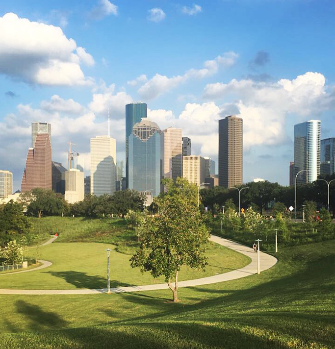

ABOUT ME
I'M STEPHANIE
I'm a web developer and graphic designer, which means I stand in a sweet spot facing both computers and people. I have an eye for design and I understand the technology behind making design come to life in a real world application.
I LEARN
One day I decided to drop everything and move to Austin, Texas to learn about computer programming and was exposed to a world of technology and innovation I had never known before. Learning about new ideas, languages and technologies has become a favorite past time of mine and I can't help
but want to learn and know more about this industry.

I WORK
After graduating from Texas A&M, I moved to Houston, Texas and started working mostly in graphic design for various companies. One of my favorite things about Houston is the diversity. I love living in a city where each neighborhood has its own culture
and lifestyle, which keeps things interesting.
I TRAVEL
As a life-long Air Force brat, I have been fortunate enough to travel the world at a young age, which allowed me to do two things: adapt to change quickly, and learn about those different from myself. This has expanded my mind to learning about the people
and cultures of the world and I plan to spend the rest of my life doing just that.